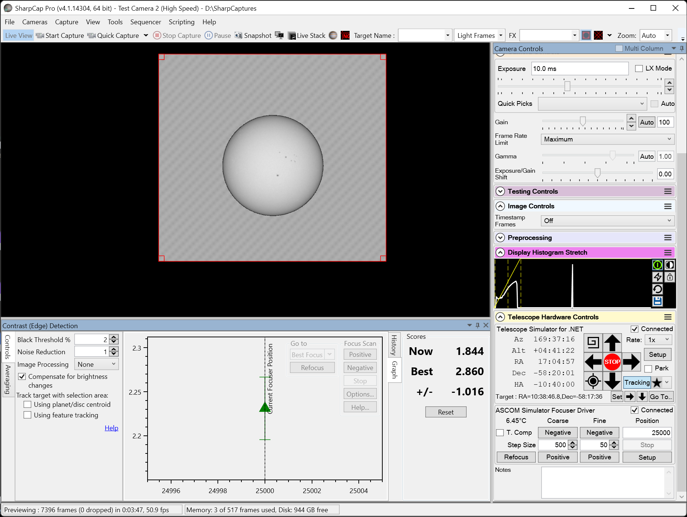
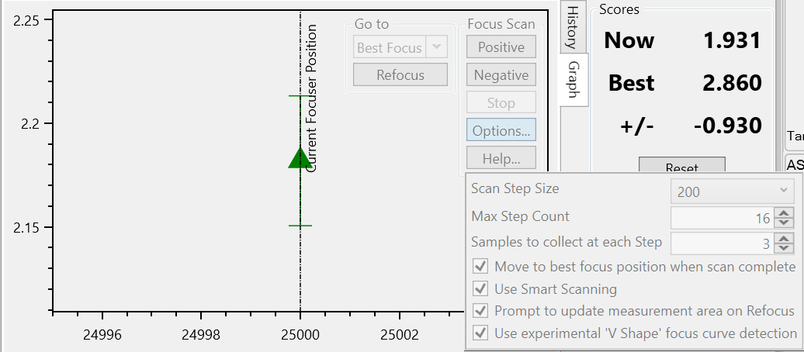
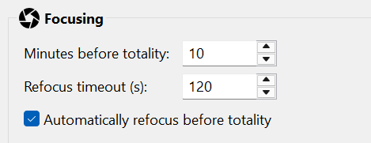

Focusing
Establish sharp focus with the physical eclipse rig, prepare SharpCap Focus Assistant, and optionally let HelioMaker request one SharpCap refocus before the central phase.
Focus the Sun before you arm
Focus on the filtered Sun and confirm sharpness before you start the run. Use a clear feature, such as the limb, a sunspot, or the crisp edge of the partial crescent, and refine focus until it is as sharp as the seeing allows. Use the same telescope, camera, solar filter, optical train and motorized focuser that will image the eclipse. The preflight checklist has a Focusing gate that reflects whether you have a confirmed focus baseline.
Prepare SharpCap Focus Assistant first
HelioMaker does not calculate the focus curve itself. When Automatically refocus before totality is enabled, HelioMaker asks SharpCap Focus Assistant to repeat SharpCap's last successful focus scan. SharpCap saves the method and scan settings only after a successful scan, then its Refocus command reuses them. You must therefore complete at least one successful solar focus scan in SharpCap before enabling automatic refocus in the eclipse plan.
Choose a solar focus method
- Contrast (Edge) Detection is the recommended starting point for the Sun. It uses surface contrast and the solar limb, and SharpCap identifies it as suitable for planetary and surface targets.
- Fourier Detail Detection is a valid alternative. Try it with your own rig and use whichever of the two methods produces the most repeatable sharp focus.
- Do not prepare the eclipse refocus with an FWHM, Bahtinov or other star based method. Those methods expect stellar point sources, not the solar disk, and HelioMaker will not accept a saved scan that uses one.

Configure and prove the scan
- Connect the eclipse camera and motorized focuser to SharpCap, point the filtered rig at the Sun, and bring the image close to focus manually.
- Open SharpCap Focus Assistant from the focus tool menu and select Contrast (Edge) Detection or Fourier Detail Detection. If a measurement area is used, make it large enough to contain the full solar disk with margin.
- Open the scan options and set Scan Step Size, the focuser movement between measurements, and Max Step Count, the maximum number of those steps in the scan. SharpCap also lets you set how many samples are collected at each step.
- Run a focus scan that passes through best focus and collects measurements on both sides of the peak. Adjust the step size and count until SharpCap can identify a convincing best focus position and return to it.
- Inspect the solar image and confirm that the result is genuinely sharp. Then manually launch SharpCap's Refocus command at least once to confirm that it can repeat the result using the saved scan.
- Only after that test succeeds, enable the automatic refocus option in HelioMaker Plan preferences. Its exact label names the phase it precedes, and so follows the eclipse type: see the list below.

For SharpCap's description of the focus tools and graphs, see SharpCap Focus Assistance.
Automatic refocus before the central phase
After SharpCap has a successful saved solar focus scan, HelioMaker can request one SharpCap refocus shortly before the central phase, so the most important frames are taken at fresh focus. It is deliberately a single operation timed a few minutes ahead, with a hard cutoff so it always finishes before the central capture window opens. On a total eclipse that cutoff is what keeps it clear of the diamond ring. Periodic refocus during the partials is intentionally not done.
This is available for every eclipse type, and the option names the phase it precedes:
- total: Automatically refocus before totality
- annular: Automatically refocus before the annularity phase
- partial: Automatically refocus before the central phase
The wording names the phase rather than the astronomical instant on purpose, because that is what the schedule is measured against. The countdown runs back from the moment the phase begins, including whatever Start before (s): that phase carries in the Phase editor, and not from annularity or maximum itself. The reason to do it at all is the same in all three cases: the tube and the air have been cooling for an hour or more by then, and the frames you care about most are the ones after that drift.

The refocus is guarded: it manages the focuser carefully around the scan (temperature compensation is only touched around the scan and restored afterwards, and the focuser position is supervised and repaired if needed). HelioMaker also pauses PHD2 guiding corrections during the refocus scan. This prevents small mount movements commanded by guiding from introducing jitter while SharpCap measures focus, helping the scan obtain a more accurate focus result. Guiding resumes after the scan when the current eclipse phase permits it.
The automatic refocus runs only when all of these are true:
- Automatic refocus is enabled in the plan preferences;
- SharpCap has a successful saved solar focus scan using Contrast (Edge) Detection or Fourier Detail Detection;
- A motorized focuser is connected in SharpCap and passes the preflight connection check;
- In shared-camera mode, HelioMaker has a stable solar detection and SharpCap's saved focusing region contains the complete detected solar disk;
- You have manually confirmed that SharpCap can refocus the physical eclipse rig successfully;
- You have not declined it in the preflight checklist; and
- The eclipse is total (refocus is available only for a total eclipse).